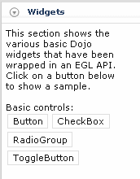
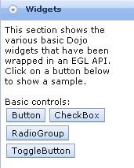

Themes provide a consistent appearance for all the Dojo widgets in your Rich UI application.
You can specify either the Claro or Tundra theme. The default value is Claro. If you are coding an application that includes Dojo widgets, the Nihilo and Soria themes are also available, but that specification affects only the Dojo widgets. If a widget has no theme, the style is specific to the widget.
The following examples show each theme.
- Claro

- Nihilo
- Soria
- Tundra

Defining the theme
To set a theme, code the theme field of the topmost Rich UI Handler part. This field defines the theme for the entire application.
These functions are also related to themes:
- ruiLib.setTheme()
- ruiLib.getTheme()
To use a theme, you must code statements that import the
necessary CSS files into your CSS file. You can import multiple themes
in this way.
- For Rich UI widgets:Code the appropriate import in the com.ibm.eg.rui_2.0.0.css file, which is in com.ibm.egl.rui_2.0.0/WebContent/css directory.
@import url("theme_name/theme_name.css");Where theme_name is the name of the desired theme. For example, if using the Claro theme, the statement would look like the following:@import url("claro/claro.css"); - For Dojo widgets:Code the appropriate set of two link statements in the includeDojo.html file, which is in com.ibm.eg.rui.dojo.runtime.<runtime>_1.5/WebContent/config.
<link href="dijit/themes/theme_name/theme_name.css" type="text/css" rel="stylesheet" media="screen" id="EGLDOJOTheme_CSS" /> <link href="dojox/grid/resources/theme_nameGrid.css" type="text/css" rel="stylesheet" media="screen" id="EGLDOJOGridTheme_CSS" />
Where theme_name is the name of the desired theme. For example, if using the Claro theme, code the following statements:<link href="dijit/themes/claro/claro.css" type="text/css" rel="stylesheet" media="screen" id="EGLDOJOTheme_CSS" /> <link href="dojox/grid/resources/claroGrid.css" type="text/css" rel="stylesheet" media="screen" id="EGLDOJOGridTheme_CSS" />